参加作品一覧
-
- ホーリーナイト、ゴー・ウェスト


作者 あきこ ジャンル ちょい探索ksg(デフォ戦有り) ツクール 2000 配信 だいじょぶ 動画投稿 だいじょぶ 備考 -
- セドナの捨舟

作者 野生のパラガス ジャンル RPG ツクール MZ 配信 いいぜ 動画投稿 いいぜ 備考 -
- マコ ニュー・トランスレーション


作者 魔皇女生誕20周年記念委員会 ジャンル デフォ戦RPG ツクール 2000 配信 可 動画投稿 可 備考 -
- 子もちもちと不思議な仲間たち ReMZ
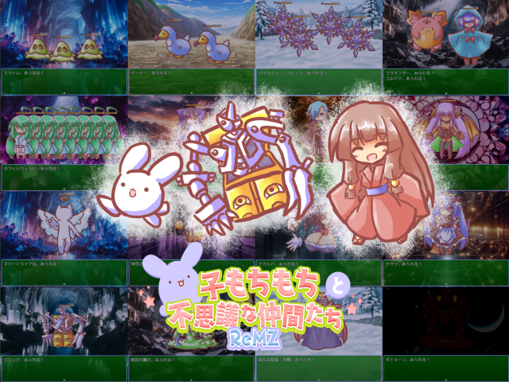
作者 t ジャンル デフォ戦RPG（18禁じゃないけど下ネタは有り） ツクール MZ 配信 はい ※自己責任＆非営利に限り可 動画投稿 いいよ ※自己責任＆非営利に限り可 備考 -
- 魔王軍奮闘記 -もしも王国が謎の組織に乗っ取られたら-


作者 AQUHADEMANIA ジャンル どこかであったようなほぼフリーシナリオRPG（けしからんネタ少しあり） ツクール 2000 配信 可 動画投稿 可 備考 -
- 2005～24キャラ歴史まとめ

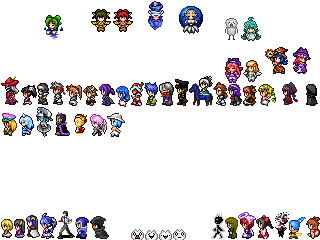
作者 ヒマーネスI ジャンル 資料 ツクール 2000 配信 可 動画投稿 可 備考 -
- ブリザルドで100人魔王把握

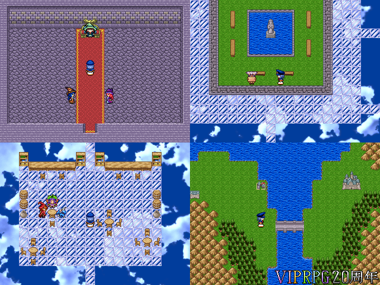
作者 SnowII ジャンル 魔王把握+やるゲ ツクール Steam版2003(Maniacs) 配信 可 動画投稿 可 備考 -
- ラディーと愉快な仲間たち


作者 リラロン ジャンル デフォ戦RPG ツクール 2000 配信 OKです 動画投稿 OKです 備考 -
- 世界じゃなイセカイ


作者 雷塵 ジャンル 自由度高いと思うデフォ戦ゲー（R-15的な表現はあるかも…？） ツクール 2000 配信 やってくれると 動画投稿 ありがたい 備考 -
- 狂脂性ブラックサンダーJ
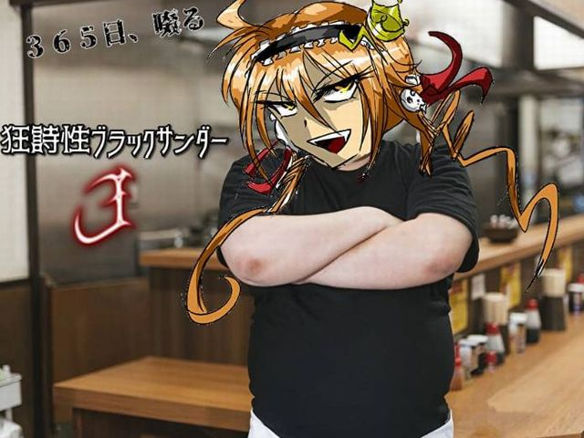
作者 ザイアン ジャンル デブたちの夜食のための見るゲ ツクール いいよ 配信 恐ろしい程 動画映えしないと思うけど それでもいいなら 動画投稿 Steam版2003(Maniacs) 備考 -
- キャプテンもしも Ace


作者 あじたま ジャンル スポーツ ツクール Steam版2003(Maniacs) 配信 可 動画投稿 可 備考 -
- カマソッソの音楽

作者 たんち ジャンル 見るベンチャー（18禁要素…無といえば無、有といえば有） ツクール Steam版2003 配信 可 動画投稿 可 備考 -
- 裏Role


作者 沼 ジャンル ノンフィールドRPG ツクール Steam版2003(Maniacs) 配信 よい 動画投稿 よい 備考 -
- アシュリーのアトリエ（体験版）
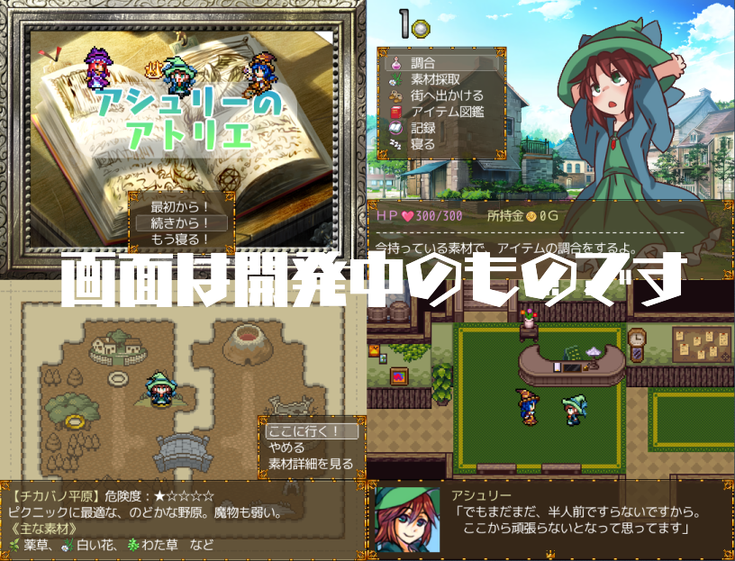
作者 帽子になりたい ジャンル ゆるめの錬金ゲー ツクール VXAce 配信 好きに 動画投稿 なされよ 備考 ※（配信・動画投稿は）自己責任でね！ -
- BREAK BREAK
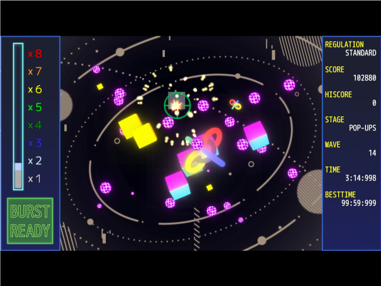
作者 伝六館館主 ジャンル STG ツクール MZ 配信 可 動画投稿 可 備考 PLiCy版 -
- ドラ子のふつうRPG


作者 ドラゴン海老 ジャンル ドラゴンRPG ツクール MV 配信 ぎゃおん（いいよ） 動画投稿 ぎゃおん（いいよ） 備考 -
- バリアーズトラップハウス


作者 牧場の牛肉 ジャンル プチ探索ゲー ツクール 2000 配信 △ 動画投稿 △ 備考 -
- ほしくずロンリネス
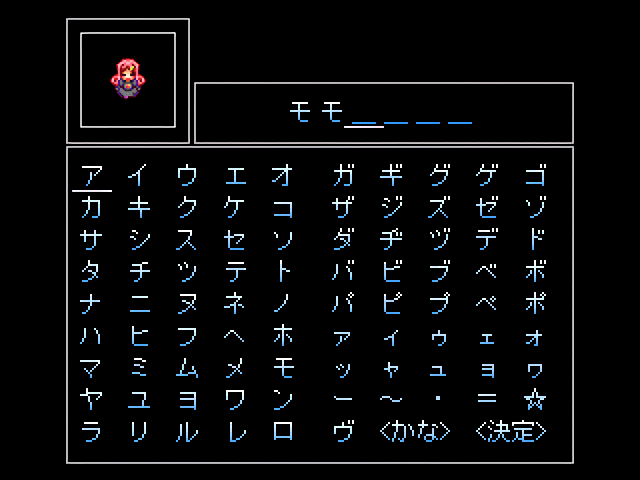
作者 ぬ ジャンル ノベル ツクール 2000 配信 可 動画投稿 不可 備考 -
- MOSHIMO PARTY！SEASONⅢ
作者 五つ葉 ジャンル 見るゲ短編集 ツクール Steam版2003(Maniacs) 配信 可 動画投稿 可 備考 -
- 粗チンでも分かる作曲講座


作者 きゆう利 ジャンル 講座ゲー ツクール Steam版2003(Maniacs) 配信 可 動画投稿 可 備考 -
- ゴメスの地獄大逃亡


作者 pi ジャンル 死にゲー＆逃げゲー ツクール MV 配信 おk 動画投稿 おk 備考 -
- もしも短編集 X-羅仁宇Vol.02
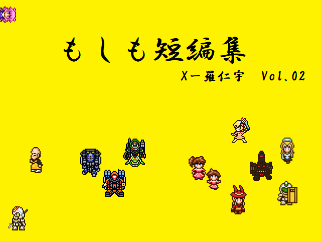
作者 X-羅仁宇 ジャンル 見るゲ＋魔王把握＋α？（R-15相応まで表現なら有かも） ツクール 2000 配信 可 （自己責任で） 動画投稿 可 （自己責任で） 備考 -
- 回る世界 君の手を取って ××××
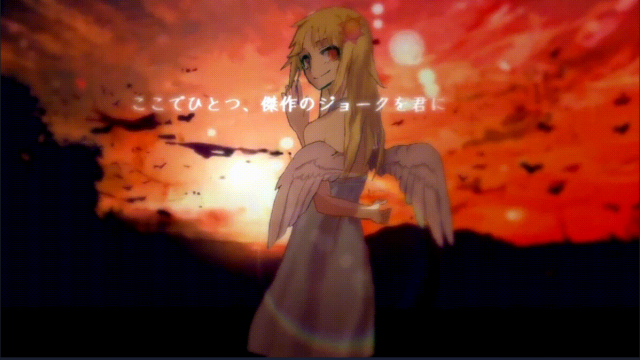
作者 キチガイ地獄外道祭文 ジャンル 傑作のジョークノベル ツクール Steam版2003(Maniacs) 配信 好きにしてちょ 動画投稿 好きにしてちょ 備考 -
- オカリンクエスト 第2章中編

作者 しーどん ジャンル パクリげー（エロゲーの話題はあるよ） ツクール VXAce 配信 おk 動画投稿 おk 備考 -
- 俺流解釈/新・世界樹の迷宮Ⅱ（上）


作者 ヌッ！ダグバ・ゼバ ジャンル ファンタジー未満ksg ツクール 2000 配信 おｋ 動画投稿 おｋ 備考 -
- ゴールドタイガー

作者 本格金運鑑定 ジャンル 富 ツクール Steam版2003(Maniacs) 配信 可 動画投稿 クリア動画のみ可 備考 -
- もしもン不思議の100階ダンジョン
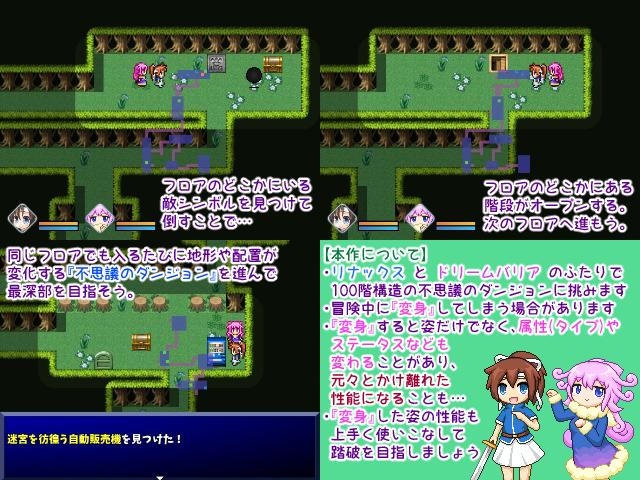
作者 雨水葉月 ジャンル 変身RPG（特殊性癖要素あり） ツクール VXAce 配信 可 動画投稿 可 備考 -
- 禁止聖人
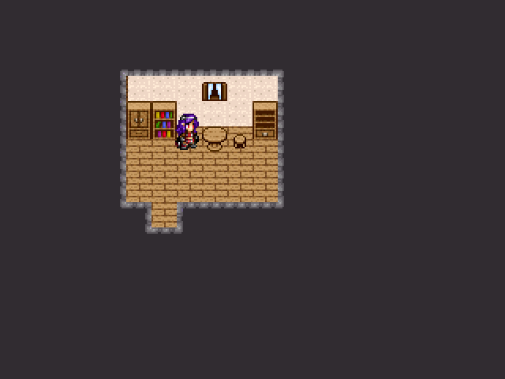
作者 鷹 ジャンル 見るゲ ツクール 2000 配信 可 動画投稿 可 備考 -
- 魔法擬人化を※※らせたくてACE

作者 大熊重信 ジャンル エロゲー（R-18要素あり） ツクール VXAce 配信 不可 動画投稿 不可 備考 -
- タッカカ・ニ・ナロコ

作者 ナラネーヨ ジャンル 代理デザートksg ツクール Steam版2003(Maniacs) 配信 やってしまっても 動画投稿 いいんだぜ？ 備考 -
- やみっちとライチのラブラばないデート＋ディベート
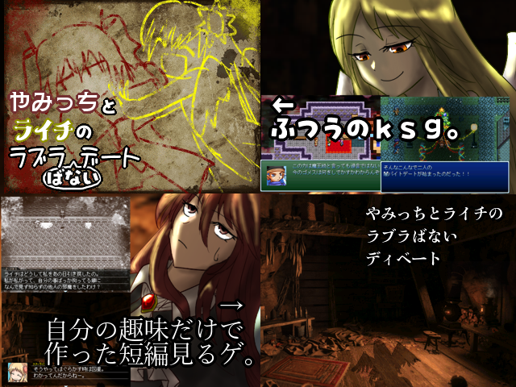
作者 女体化ダークメカアレックス ジャンル ksg＋見るゲ ツクール 2000 配信 ええよ 動画投稿 ええよ 備考 -
- 好きキャラで100人把握 with エクスピア連合王国


作者 歴代RTP大好き丸 ジャンル 魔王把握 ツクール Steam版2003(Maniacs) 配信 可 動画投稿 可 備考 -
- アナルウォッシング


作者 宇宙の果て ジャンル ksg（エロエロ要素/ショッキング表現あり） ツクール 2000 配信 可 動画投稿 可 備考 -
- 呪術師協会VS○○○○
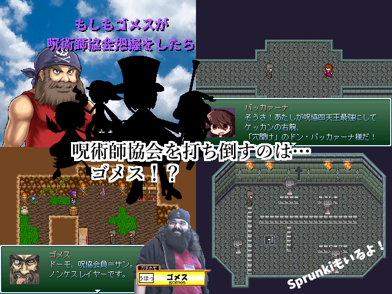
作者 イカスミ ジャンル なんでも（間に合わなかったので魔王把握のみ） ツクール 2000 配信 やっていただければ喜びます。 動画投稿 備考 -
- もしもセルフコレクション


作者 黒糖まんじゅう ジャンル もしコレ風ほぼ見るゲ集 ツクール 2000 配信 いずれも自己責任で 動画投稿 備考 -
- Crazy Rider β
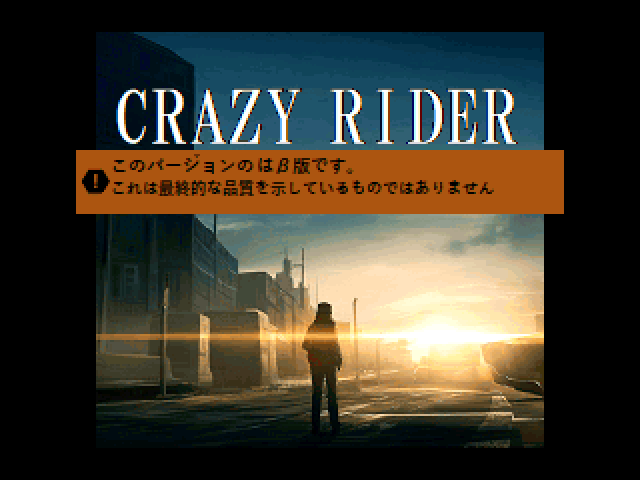
作者 紅夏 ジャンル アクション ツクール Steam版2003 配信 可能 動画投稿 可能 備考 -
- VTuberでサガフロごっこするゲーム v0.3
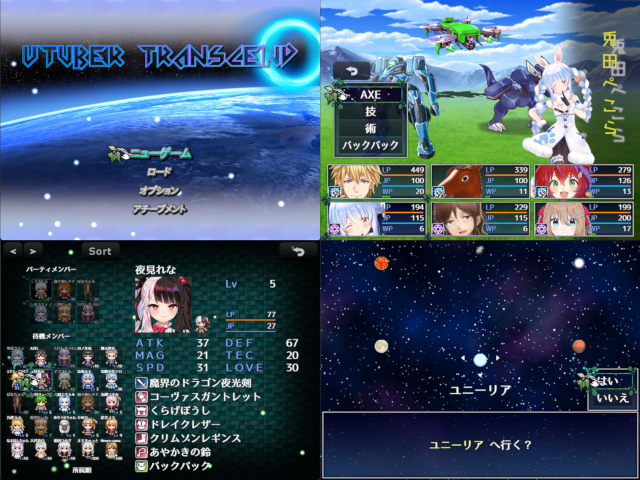
作者 おりおん ジャンル RPG ツクール MZ 配信 OK 動画投稿 OK 備考 -
- 今から何かｔｋる


作者 F-man ジャンル 分からん 多分やるゲ ツクール Steam版2003(Maniacs) 配信 可 ただし自己責任 動画投稿 可 ただし自己責任 備考 -
- 金リカ2v4


作者 畳の上の水蓮 ジャンル ゲームブック風RPG風RPG ツクール 2000 配信 いいけど…… 動画投稿 いいけど…… 備考 -
- へんしんアレックスにまつわるエトセトラ
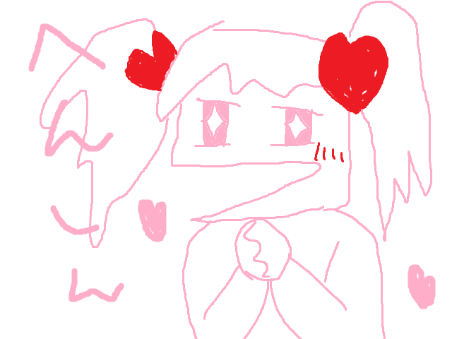
作者 ワシミミズク ジャンル ksg ツクール 2000 配信 自己責任 動画投稿 自己責任 備考 -
- 思い付きに任せたなんたら

作者 記念提出目指したい人 ジャンル デフォ戦を目指す ツクール 2000 配信 可 動画投稿 可 備考 -
- 縛りにもならない縛りで「好きなキャラ100人で魔王把握」
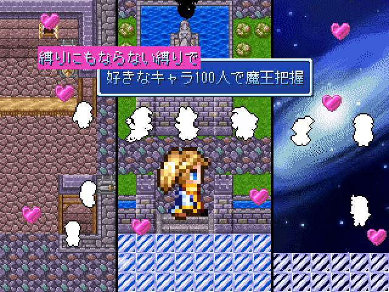
作者 黄色いエッグプラント ジャンル 魔王把握 ツクール 2000 配信 ＯＫ 動画投稿 ＯＫ 備考 かなり軽度の変化・TS要素あり -
- 勇者の休養先把握


作者 ものくろまる ジャンル 新素材紹介用サンプルゲーム ツクール 2000 配信 可 動画投稿 可 備考 -
- ドラ子の魔王把握50人
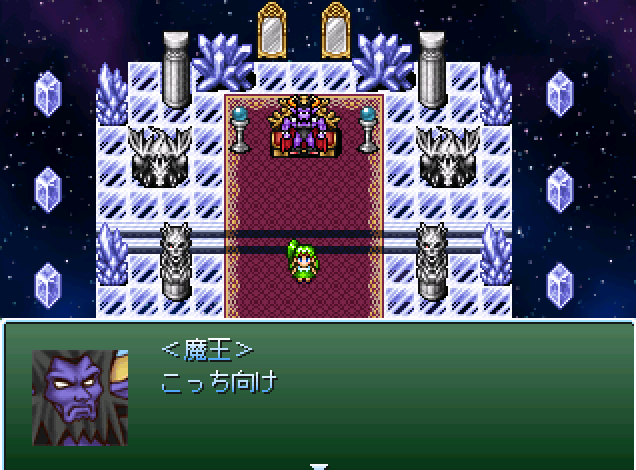
作者 ドラ子が好きな人 ジャンル 魔王把握50人 ツクール 2000 配信 可 動画投稿 可 備考 -
- 衛兵アレックス
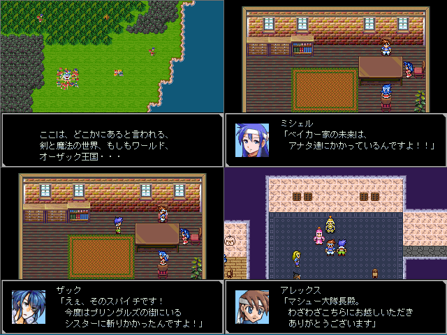
作者 kt住江 ジャンル 探索型やるゲ（指で数えるほどしかありませんがデフォ戦あり） ツクール 2000 配信 可 動画投稿 可 備考 性的要素はありませんが、一部ＮＰＣキャラによる戦闘アニメでの血しぶきの描写があります。 -
- 劇的ラストバトル
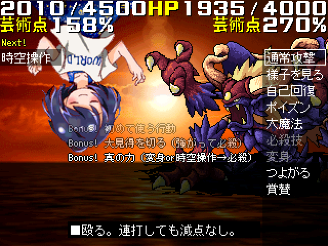
作者 脳内住民 ジャンル RPG…RPG? ツクール 2000 配信 よかろう 動画投稿 やってみろ 備考 -
- AIMask-アイマスク-
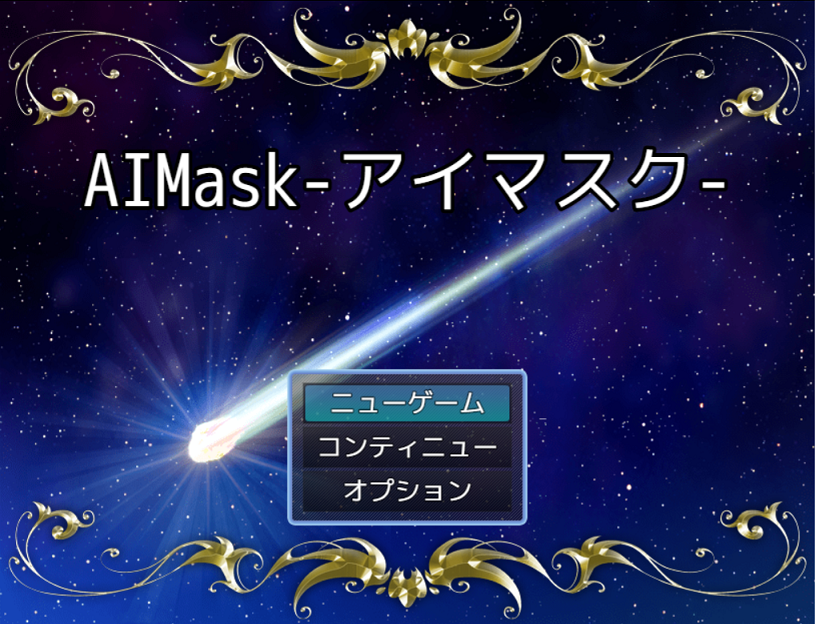
作者 Monzyu ジャンル ノベルゲーム（少しだけクイズあり） ツクール MZ 配信 OK 動画投稿 OK 備考